01
Policy
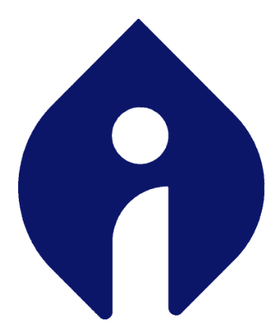

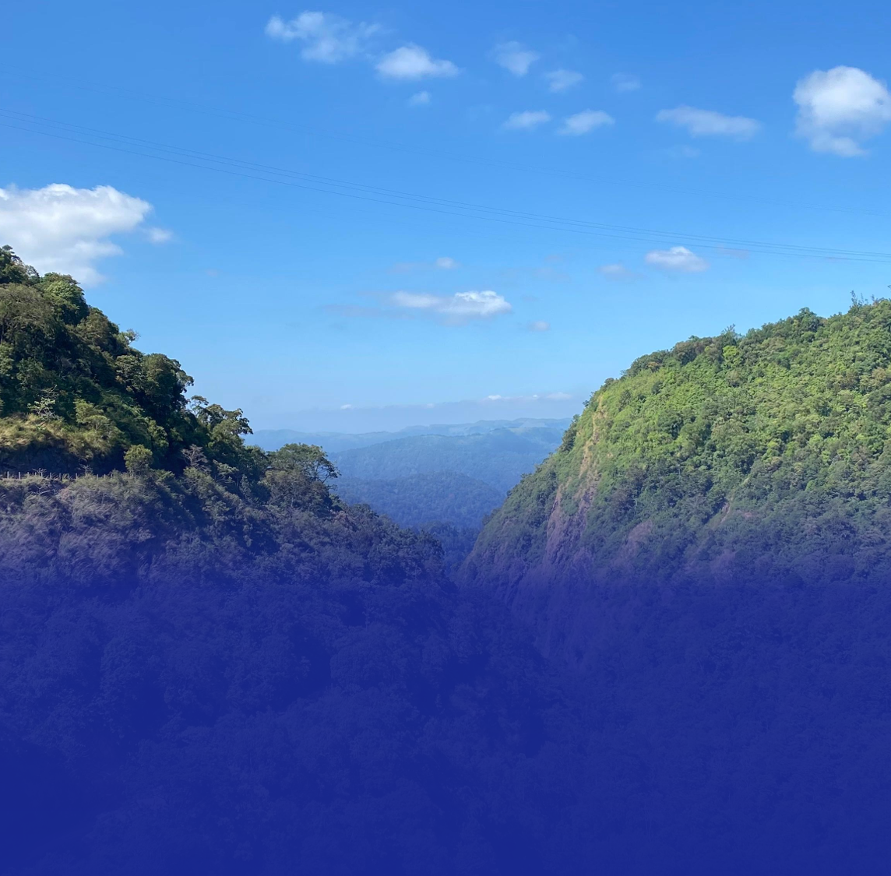
A stacked systems model — secure tenure at the base, four building blocks in the middle, dual outcomes at the top.
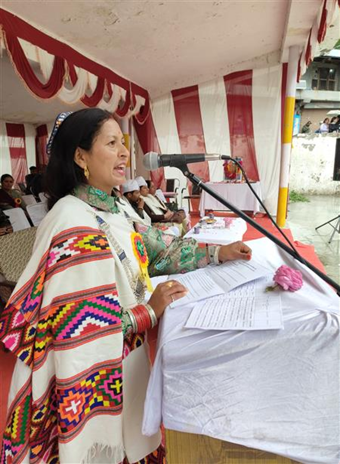
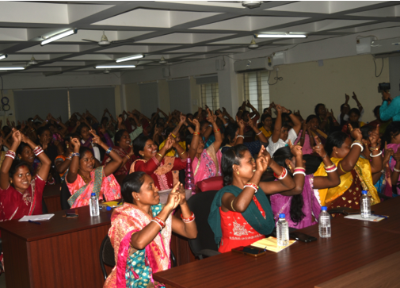
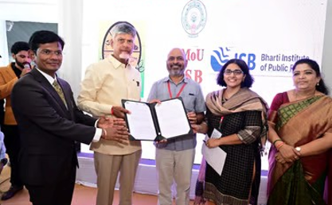
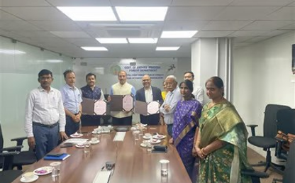
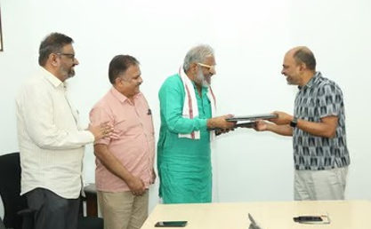
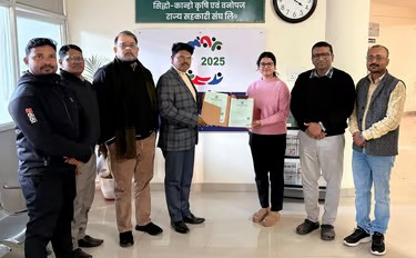
Shaping bamboo policy, convening the sector around shared priorities, and putting the evidence into the public domain.
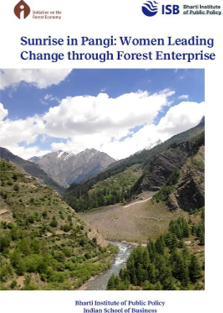
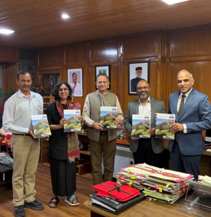
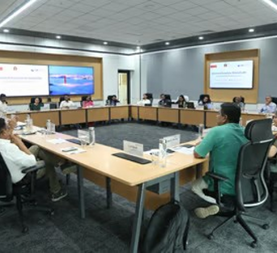
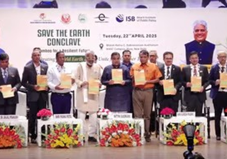
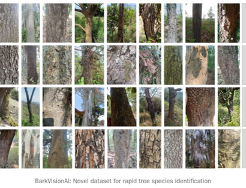
From community capability to public platforms and model demonstration — a connected pathway for Maharashtra’s forest economy.
Community forest rights as the operating base for resource intelligence, governance capacity, enterprise, and market linkages.
CFR boundaries, forest inventories and economic-species layers for shared planning evidence.
CFRMC strengthening with research evidence and district–Forest Department coordination.
Women-led bamboo aggregation and sustainable supply linked to industry and policy platforms.
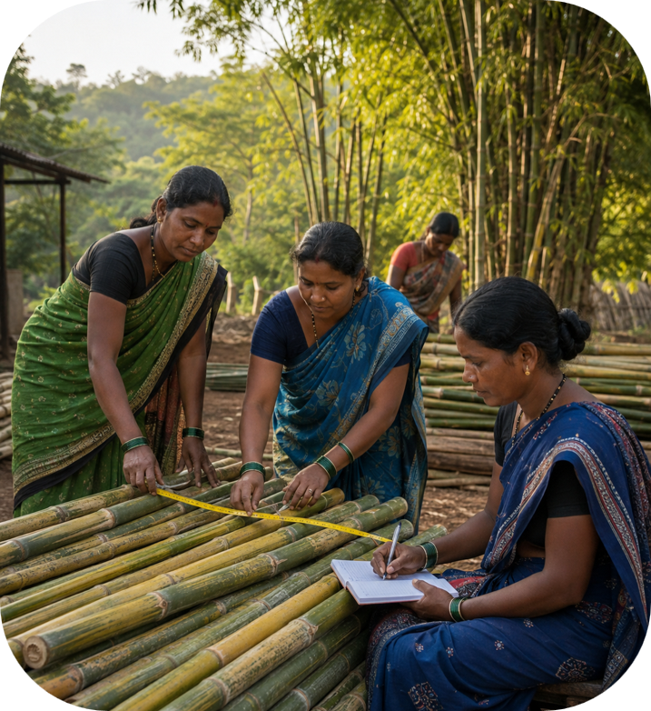
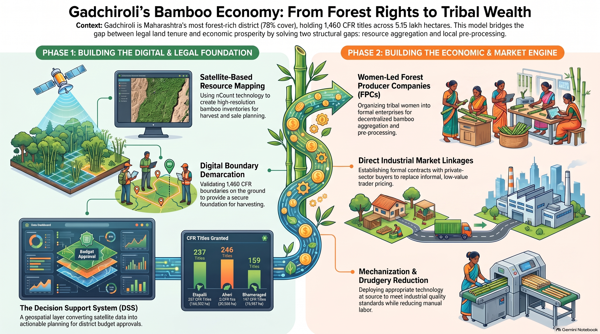
From 39 Forest Producer Companies toward a national model — reimagining forests as landscapes of opportunity, stewardship, and sustainability. We'd welcome the conversation.